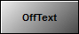
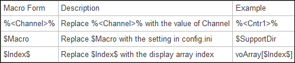

iTest User's Guide
The ADT Button display object will allow a user to send mailslot messages when turned on and off. Buttons can also adjust channel values and operate as check boxes and radio buttons.
ADT Button

General Tab
| Option | Description |
| Type | Select the type of button you want to configure: Push acts as a momentary switch that stays on only when being pressed. This can change a channel value. Toggle turns on or off each time it is pushed. It also changes the value of a channel. Save Text sends a mailslot message to save text in an object that was inserted by an ADT Data Entry control. Hyperlink applies push characteristics without a border. The cursor appears as a hand (as on a web page) when positioned over this button during runtime. Check applies toggle characteristics and includes an unfilled checkbox on its left edge. When the button is on, a checkmark appears inside the checkbox. When the button is off, the checkmark does not display. Circular applies toggle characteristics and includes an unfilled circle on its left edge. When this button is on, a black dot appears inside the disk. When the button is off, the black dot does not display. This can act like a radio button. |
| Channel Name | Click the Channel... button to open the Channel Selection dialog, which you can use to select the database channel whose value changes when the state of the button changes. The button state may also be controlled by changing the database channel value. Channel names are optional except when you are configuring the ADTButton as a Toggle, Check, or Circular radio button. |
| Radio Index | Only used with Toggle, Check, and Circular button types. When set to -1, Toggle, Check, and Circular buttons function as stand-alone buttons. When set to a positive number, the button functions as a radio button with all other buttons that have a radio index set to a positive number (radio buttons are a group of buttons in which only one button can be selected at a time). The buttons in a radio button group must share the same database channel, but each must have a unique radio index. |
| Off Text | Type the text that displays on the ADTButton when it is off. |
| Off Picture File Path | Click the … button to the right of this field to display the Open dialog box in which you can locate and select a graphic. This graphic displays on the ADTButton when it is OFF. |
| On Text | Type the text that displays on the ADTButton when it is on. |
| On Picture File Path | Click the … button to the right of this field to display the Open dialog box in which you can locate and select a graphic. This graphic displays on the ADTButton when it is ON. |
| Border Type | Select a border for the ADTButton. |
| Tooltip Text | Type the text that displays when the cursor is placed over the ADTButton during runtime. |
| Control ID | Provides a unique name for the control. This name can be used in mailslot messages to change control properties during runtime on the iTest Console. |
| Permit Runtime Changes | When selected, allows changes to be made programmatically. |
Messages Tab
| Option | Description |
| Mailslot and Message | On Messages are sent when the button goes from off to on. Off Messages are sent when the button goes from on to off. Double-click in the Mailslot field and select the desired mailslot from the list or type a valid mailslot address. After specifying a mailslot, double-click in the Message field and select a command from the list. You can also type a valid command in this field. After selecting a command, you must customize it by replacing all fields between angle brackets (<,>) with actual values. After a valid mailslot has been assigned to the ADT Button, a new row is added to add another message. To delete a row, simply click it and hit the Delete key on your keyboard. Messages support the following macros:  |
| Send messages when state is changed by Channel | When selected, sending mailslot messages is not dependent on the button’s state. Instead, the mailslot messages will be sent when there is a change in the state (value) of the database channels associated with the ADT Button. |
These properties are useful when issuing the following mailslot message:
\\.\mailslot\DisplayName>>$SETITEMPROPERTY ControlID PropertyName PropertyValue
The following are the names of the properties that can be changed by mailslot message to the display. These property names may or may not be the same as the property names shown on the display object property setup dialogs. Most of these property names are self-explanatory. The first column is the data type of the property.
The int or OLE_COLOR for color is the color RGB values. “BSTR” means the type of the property is string. “int”, “float”, “long”, “short”, “double” means the type of the property is number. “Boolean” means the property value should be 1 or 0.
Font property syntax is complicated.
<font name>,<bold>,,<italic>,<font size>,,<strikeout>,<underline>,
example: Arial,0,0,0,97500,0,0,0,400
ADT Button Object Properties
| Type | Property | Notes |
| string | OffText | - |
| string | OnText | - |
| int | OffBkColor | - |
| int | OnBkColor | - |
| int | OffForeColor | - |
| int | OnForeColor | - |
| string | OffMessage | - |
| string | OnMessage | - |
| string | ChannelName | - |
| long | RadioIndex | - |
| long | Type | - |
| bool | SendMessagesOnChannelChanged | - |
| long | ButtonNum | - |
| string | OffBitmapFilePath | - |
| string | OnBitmapFilePath | - |
| long | BorderType | values: 0 raised, 1 bump, 2 etched |
| string | TooltipText | - |
| bool | ChangesOK | - |
| bool | RoundedEdges | - |
| long | BackColorEnd | - |
| bool | EnableShading | - |